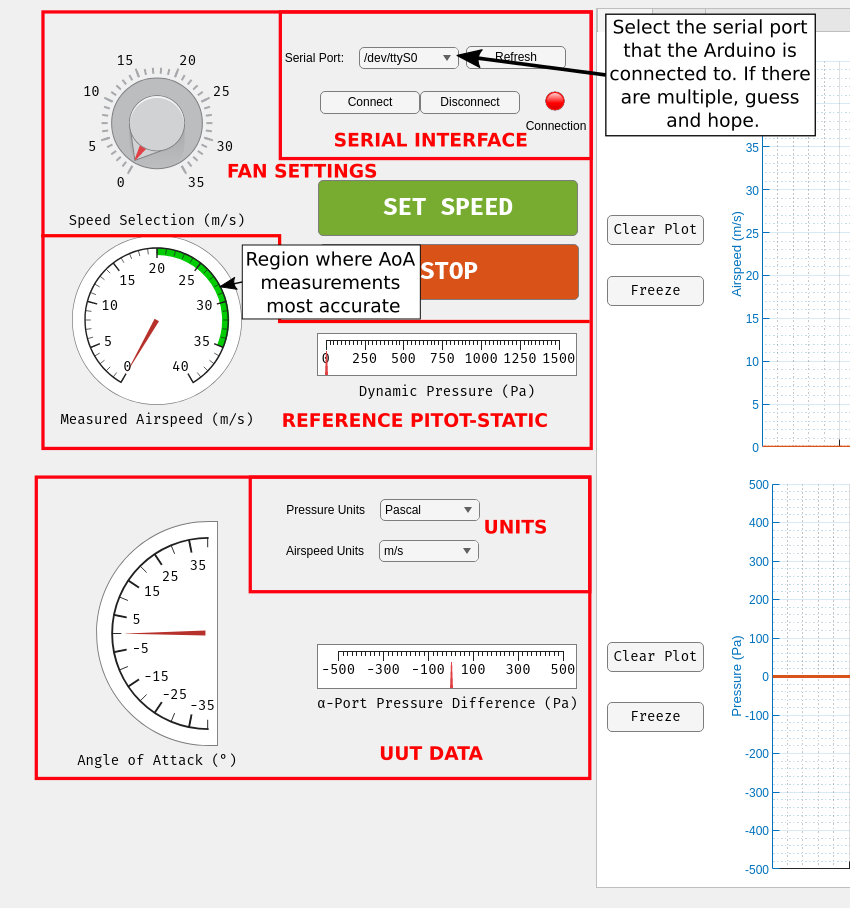

How the Interface Is Sectioned

How to Operate
-
Once the USB cable from the wind tunnel is connected to your computer, select
the correct serial port from the dropdown. If you connected the USB cable
after opening the application, then hit refresh to update the list.
-
Hit "Connect" and wait for the green indicator to illuminate. The fan may ramp
upt to a speed of about 20 m/s, but it should return back to zero after a
couple seconds.
-
To select a test section speed, click on the desired speed on the selection
knob and press "SET SPEED". The reference speed should then be displayed on
the "Measured Airspeed" gauge.
-
Note that the angle of attack readings are only accurate between 20 m/s and
35 m/s (The green region on the airspeed indicator)
Troubleshooting
-
If the incorrect serial port is chosen, then the app may freeze and the
process will need to be killed in task manager.